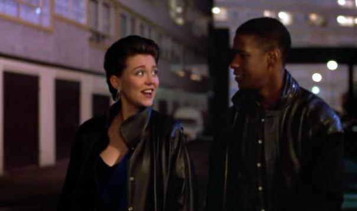

Muggers' Paradise?
Despite Met Police statistics showing a crime rate 45% below the borough average, the council claims that the Heygate estate suffered from crime and antisocial behaviour. As a result of sloppy journalism and press statements issued by the council, the estate has been labelled as "Muggers' paradise" in articles by the BBC, the Evening Standard and the Daily Mail.
The estate has also been promoted by the council for use as a film backdrop for a large number of gang and violence-related movies like Michael Caine's "Harry Brown", who labelled the estate "a rotten place, not fit for animals". We think this is an insult to our former community and the hundreds of families who lived here happily for decades until we were forced from our homes to make way for the regeneration.

Filming has always been a bone of contention on the estate ever since the first time it was used as an urban crime backdrop in the 1989 Denzel Washington film Queen & Country.
The council has always argued that it ensures the films don't use the estate's name and that it provides much-needed income for the council. It was only after years of complaints from residents that films portraying drugs and violence were banned from using the estate in 2012. It was recently disclosed that Southwark outsources its film location services, and that around half of its annual revenue from filming in Southwark is paid to its outsourcing company filmfixer.co.uk.
 In August 2012, the council came under fire for selectively removing politically sensitive pieces of graffiti on the estate.
In August 2012, the council came under fire for selectively removing politically sensitive pieces of graffiti on the estate.
 Non politically sensitive graffiti on the estate is not just tolerated, but also encouraged: in September 2012 the council commissioned street artist 'Gold Peg' to create a 200 metre long graffiti mural as part of a go-karting event.
Non politically sensitive graffiti on the estate is not just tolerated, but also encouraged: in September 2012 the council commissioned street artist 'Gold Peg' to create a 200 metre long graffiti mural as part of a go-karting event.  While political graffiti is still swiftly removed, the council does nothing to disuade the constant stream of graffiti artists keen to get their tag seen in national newspaper articles like this one:
http://www.dailymail.co.uk/news/article-2316072/Poignant-pictures-decaying-crime-ridden-housing-estate-fallen-ruin-remaining-residents-await-bulldozers.html
While political graffiti is still swiftly removed, the council does nothing to disuade the constant stream of graffiti artists keen to get their tag seen in national newspaper articles like this one:
http://www.dailymail.co.uk/news/article-2316072/Poignant-pictures-decaying-crime-ridden-housing-estate-fallen-ruin-remaining-residents-await-bulldozers.html